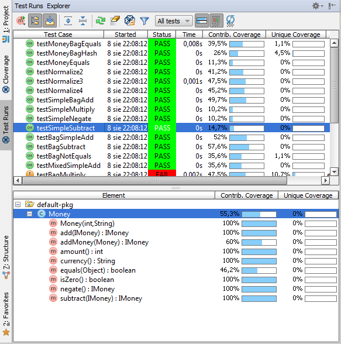

Test Runs Explorer
The Test Runs Explorer displays recently run tests in your Clover-instrumented project.
The upper panel displays test cases as a flat list ( ), grouped by package ( ) or by source root folder ( ).
The lower panel displays classes and methods covered by the test case selected in the upper panel. Two metrics are displayed for each class and method:
- Contributed Coverage indicates the percentage of statements that have been covered by selected test case,
- Unique Coverage indicates the percentage of statements that have been covered by selected test case only.

Unique Actions in Test Run Explorer
- / / : Click to choose test cases layout.
- : Toggle calculating test coverage to display in the upper panel. If enabled, the plugin will provide information about given test contribution to the selected target scope (see below). Note that enabling this option seriously slows down the Clover database refresh.
- Target scope: Only tests touching selected scope would be shown.
- All tests: All recorded tests in the project,
- File tests: All tests touching the currently displayed file,
- Class / Method / Statement at cursor: All tests involving the class, method or statement under the cursor, respectively.
Select In -> Clover (Alt-F1 menu)
It is possible to view currently selected element in Clover using the Alt-F1 menu.
If the cursor is inside a recognized test case, it would be displayed in Test Runs Explorer, listing
methods touched by the test in the lower panel.
Otherwise the element under cursor is displayed
in the Coverage view.
You have already learned how to navigate through code coverage and test results. But don't you have a feeling that your coverage reports could be more accurate when focused on really important areas of your application? If you do so, don't hesitate to read 4. Scope of instrumentation in IDEA to learn how to configure instrumentation scope from whole project down to a single line of code.